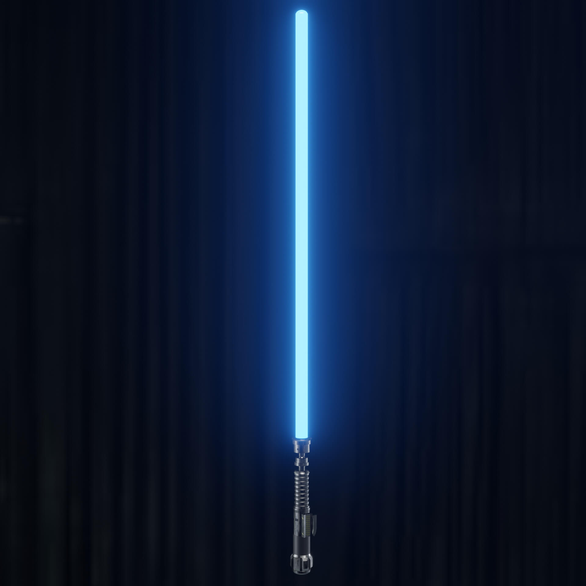
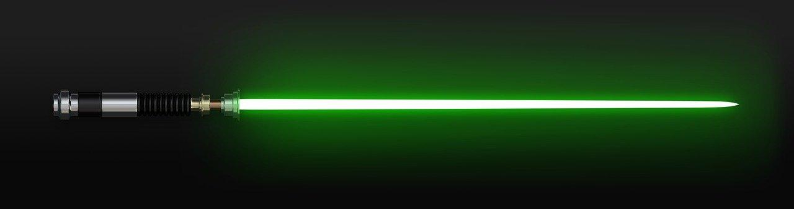
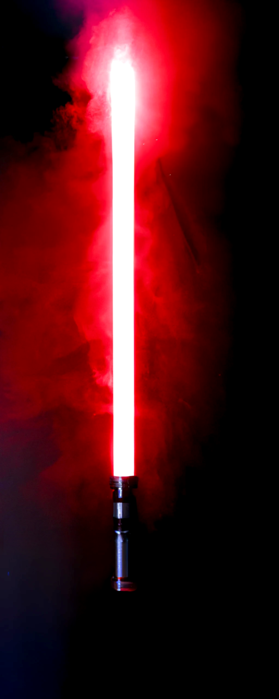
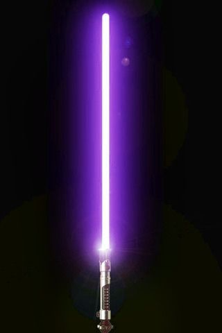
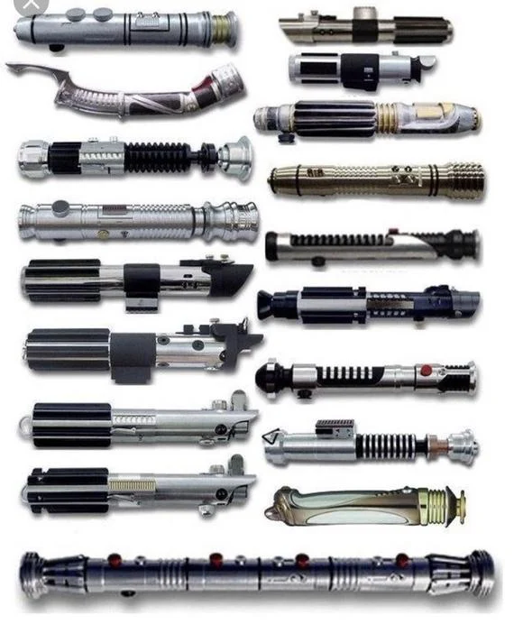

Цветове, форми и бойни стилове

Символ на смелост, чест и бойна готовност. Често се свързва с джедаите-пазители.

Показва мъдрост, хармония и силна духовна връзка със Силата.

Свързва се с тъмната страна, агресията, страха и разрушителната мощ.

Рядък и впечатляващ цвят, който показва сила, уникалност и необичаен боен стил.

Сред тях има двойни светлинни мечове, кръстовидни модели и други нестандартни конструкции.